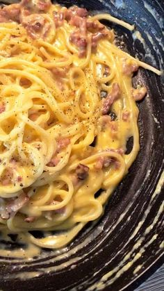

Paste Carbonara

Ingrediente:
- Spaghete
- Bacon
- Oua
- Parmezan ras
- Piper negru
Mod de preparare:
- Fierbe spaghetele conform instructiunilor de pe ambalaj.
- Prajeste baconul pana devine crocant.
- Amesteca ouale batute cu parmezan si adauga spaghetele si baconul.
Valori nutritionale per portie:
| Nutrient |
Valoare |
| Calorii |
400 kcal |
| Proteine |
18 g |
Vezi rețeta originală de Paste Carbonara aici